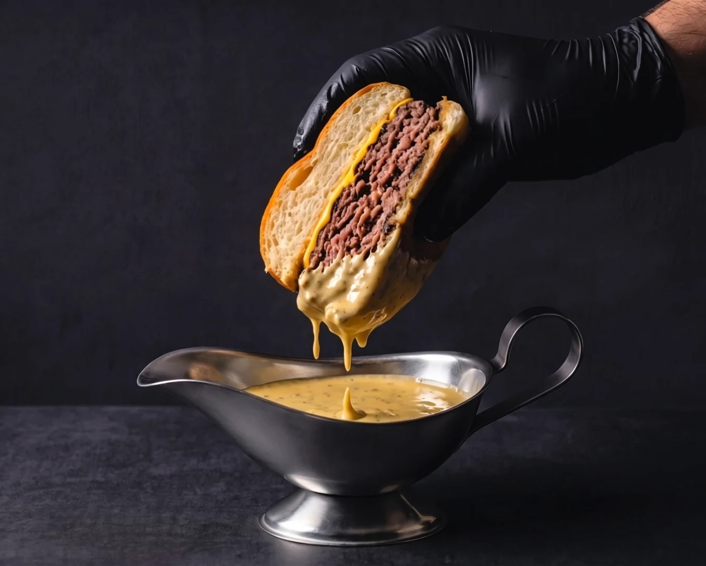

Opening on 1 December
Geneva
Quai Gustave-Ador 24, Eaux-Vives. Dine in, takeaway and online ordering.
Menu and orderingCafé de Paris sauce · For over 40 years
Cut in half, set in the sauce, dipped to the very last bite. In Geneva, Madrid and Ibiza.


At the table
The burger arrives cut in half, already in the Café de Paris sauce. The fries sit alongside, to dip at your own pace.
Order in GenevaOur locations
Quai Gustave-Ador 24, Eaux-Vives. Dine in, takeaway and online ordering.
Menu and ordering
Delivery only, on Glovo.
Order in the Glovo app
The ritual
One clean stroke of the knife, in the kitchen. The burger arrives cut in half, set in the Café de Paris sauce: each half gets dipped.
Our story
Chapter I
The 20th century
In Paris, the grand brasseries serve entrecôte with a house sauce. Each address keeps its own recipe, and people come for it.

Chapter II
Geneva · Paris
Café de Paris sauce is born from this tradition of entrecôte sauces, between Geneva and Paris.

Chapter III
1980s
In the early 1980s, it reaches Parisian brasseries: rue Feydeau, rue de Ponthieu, rue François-Miron.

Chapter IV
40 years
For forty years, the recipe passes from kitchen to kitchen, from hand to hand.

Chapter V
Today
Atelier Paris Burger sets the sauce on the plate, under the burger cut in half. To dip until the last bite, in Geneva, Madrid and Ibiza.
Order in Geneva
We did not invent Café de Paris sauce: we serve it. Archive photos of Paris, credits at the bottom of the page.